Lo respondí con los datos diarios reales de la Superintendencia de Pensiones —278.000 filas, de 2002 a 2026, deflactadas por la UF— y no con un mercado simulado. La respuesta corta: depende de cuándo te cambias, y no existe una regla que gane de forma confiable.
Un apunte para quien no conoce el sistema: los ahorros obligatorios de cada trabajador están en uno de cinco multifondos (A a E) administrados por una AFP. El Fondo A invierte hasta 80% en acciones —más retorno esperado, más vaivén—. El Fondo E es casi todo renta fija. Uno puede cambiarse cuando quiera, y la jugada popular en una caída es huir de A hacia el "seguro" E.
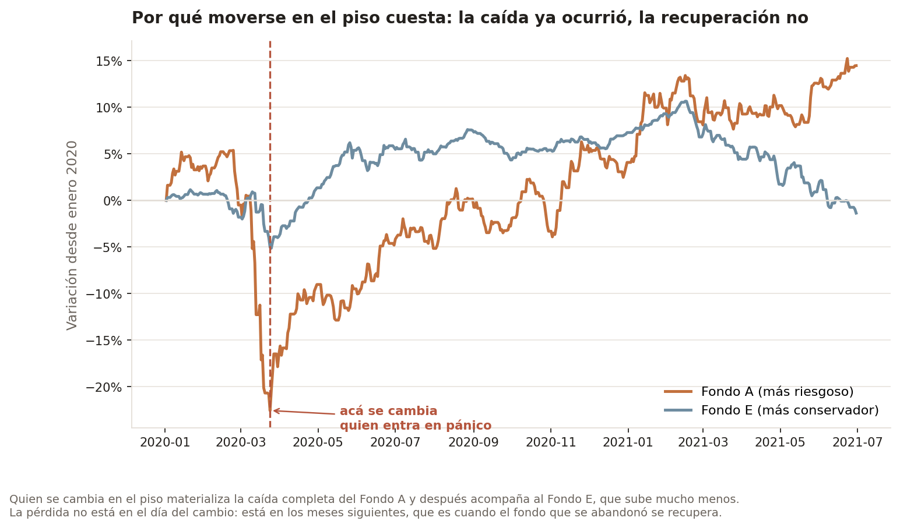
Quien se cambia en el piso materializa la caída completa y después acompaña a un fondo que sube mucho menos. No se pierde por haberse movido: se pierde por no estar cuando el fondo que se abandonó se recupera.
Medir el costo en puntos de rentabilidad sobre un monto único es la pregunta de un inversionista. Un afiliado cotiza todos los meses, tiene una edad, y la ley le impide estar en el Fondo A desde los 56. Así que simulé carreras previsionales completas en UF —cotizando 10% desde los 25— para la misma persona tomando dos decisiones distintas.
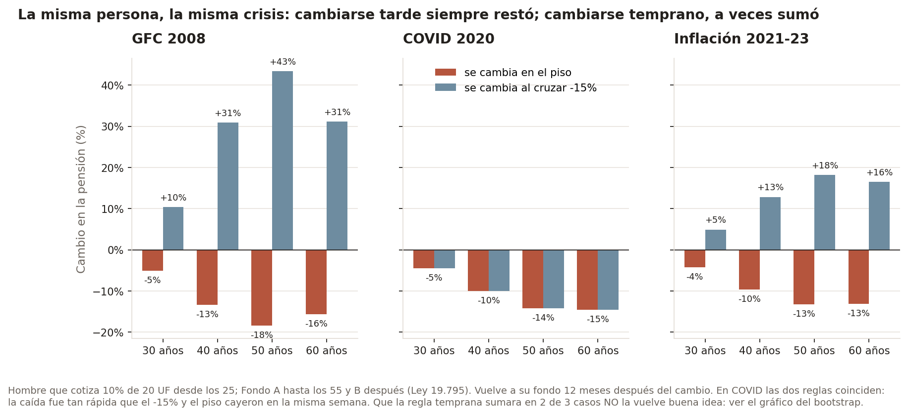
La pérdida de cambiarse en el piso crece con la edad y es permanente: cuando las dos trayectorias vuelven al mismo fondo crecen igual, así que la recuperación perdida no vuelve nunca. A los 30 años son entre 4 y 5 puntos de pensión; a los 50, entre 13 y 18.
La primera versión de este análisis concluía que "en los 15 escenarios, quedarse ganó siempre". Tenía un problema serio: se cambiaba en el mínimo realizado de cada caída, y elegir el mínimo con retrospectiva garantiza que lo que viene después es una subida. Nadie sabe que está en el piso.
Así que generé 2.000 historias sintéticas de 24 años con un bootstrap por bloques sobre los retornos reales, y comparé esa regla con una que alguien sí puede seguir: cambiarse al cruzar −15% de pérdida.
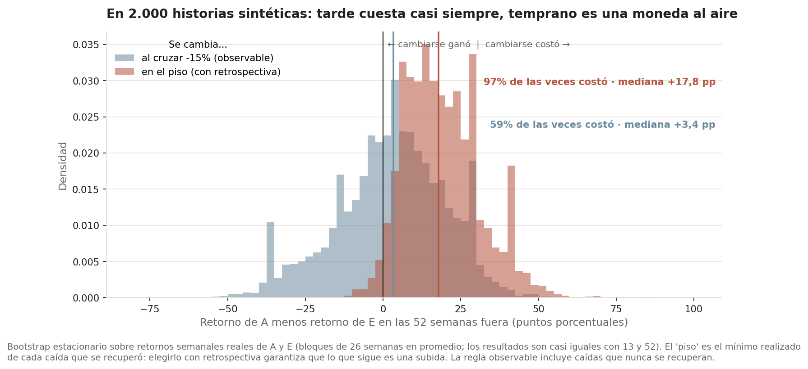
La lectura honesta es una asimetría: cambiarse tarde cuesta casi siempre; cambiarse temprano es una apuesta con resultados muy dispersos en las dos direcciones. En la historia real la regla temprana habría ganado dos de tres veces, y eso tampoco la vuelve una estrategia.
Los mismos resultados, en los indicadores con que se evalúa un fondo o una estrategia en la industria: todo en términos reales, con el Sharpe reportado a tres tasas libres de riesgo porque el orden de los fondos cambia con la tasa.
| Fondo, 2002–2026 | CAGR real | Volatilidad | Sharpe rf 0% / 1% / 2% | Caída máxima | Meses bajo el agua | CVaR 95% mensual |
|---|---|---|---|---|---|---|
| A | 5,85% | 10,2% | 0,61 / 0,51 / 0,41 | −48,5% | 82 | 8,0% |
| B | 5,01% | 7,5% | 0,69 / 0,55 / 0,42 | −37,1% | 38 | 6,0% |
| C | 4,24% | 5,3% | 0,81 / 0,62 / 0,43 | −24,3% | 33 | 4,5% |
| D | 3,26% | 4,3% | 0,76 / 0,53 / 0,30 | −22,1% | 67 | 4,0% |
| E | 2,92% | 4,2% | 0,70 / 0,47 / 0,23 | −24,1% | 67 | 3,8% |
El Fondo C tiene el mejor retorno ajustado por riesgo con cualquier tasa. Y el E no es refugio en poder adquisitivo: su caída máxima real es igual a la del C y lleva 67 meses sin recuperarse.
Para las estrategias, el benchmark justo no es "100% en A" sino una mezcla fija con la misma exposición promedio al Fondo E. Si la mezcla logra lo mismo, la regla no aporta timing: solo baja la exposición.
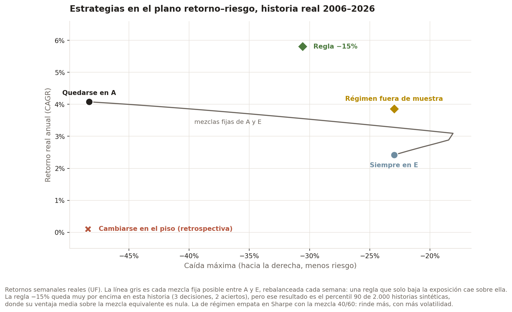
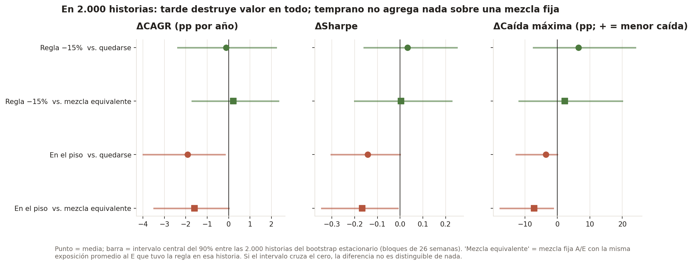
Cambiarse tarde destruye valor en todos los indicadores, contra quedarse y contra una mezcla equivalente. Cambiarse temprano no lo destruye, pero tampoco agrega: equivale a tener un poco menos de renta variable todo el tiempo. El buen resultado de la regla −15% entre 2006 y 2026 cae en el percentil 90 de las 2.000 historias: fue una historia favorable.
Barrer por "días antes del piso" da una respuesta tan cierta como inútil: cambiarse una semana después del techo de 2007 gana 90 puntos porque esquiva el crash entero. Pero nadie sabe que está parado en el techo. Lo que una persona sí observa el día que decide es cuánto perdió hasta ahí:
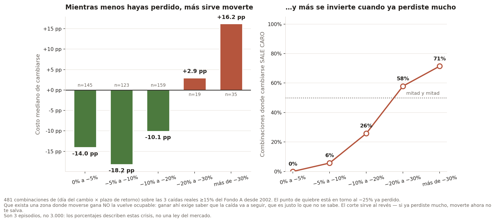
| Pérdida ya sufrida al cambiarse | n | Costo mediano | Gana cambiarse |
|---|---|---|---|
| 0% a −5% | 145 | −14,0 pp | 100% |
| −5% a −10% | 123 | −18,2 pp | 94% |
| −10% a −20% | 159 | −10,1 pp | 74% |
| −20% a −30% | 19 | +2,9 pp | 42% |
| más de −30% | 35 | +16,2 pp | 29% |
Son 3 episodios, no 3.000: el balde de −20% a −30% se apoya en 19 combinaciones de las mismas crisis, así que ese 42% pesa mucho menos que el 100% de la primera fila.
Todo el argumento descansa en que nadie sabe si la caída va a seguir, así que lo puse a prueba. Los retornos mensuales del Fondo A no tienen autocorrelación (AR(1) +0,07, p = 0,53). La volatilidad, en cambio, sí es predecible —un shock se disipa a la mitad en unas seis semanas—, pero eso dice que hay tormenta, no hacia dónde va.
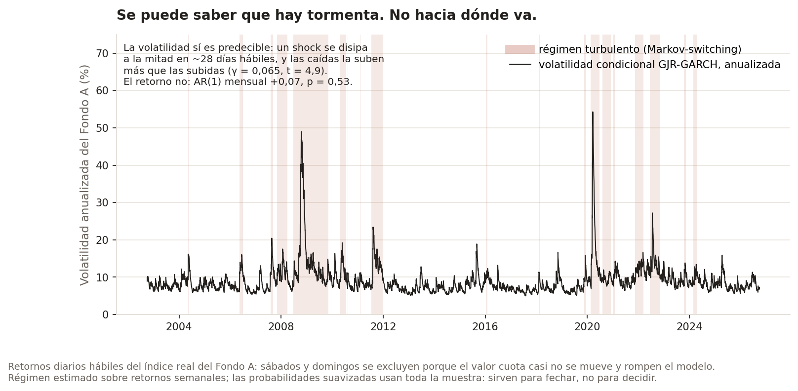
Un modelo de cambio de régimen detecta esas tormentas. Salir cuando las detecta parecía ganarle a quedarse… hasta quitarle la información del futuro.
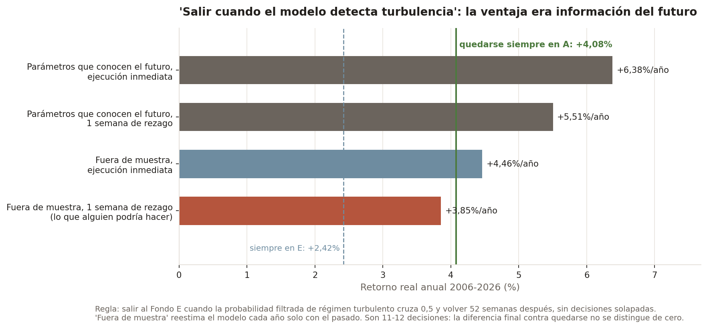
Con parámetros que conocen el futuro, la regla rendía entre 1,4 y 2,3 puntos más por año. Estimada fuera de muestra y con el rezago real de un traspaso, rinde 0,2 puntos menos que quedarse. La ventaja era sesgo de anticipación.
El valor cuota está en pesos, y cada retorno lleva unos 3,8 puntos de inflación anual adentro. Deflactado por la UF:
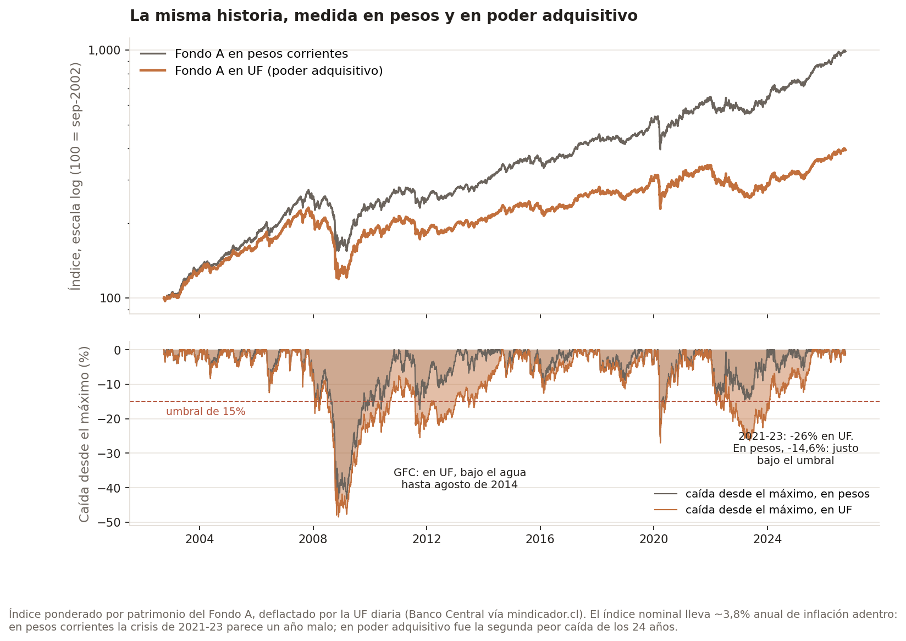
La crisis de 2008 dejó al Fondo A bajo el agua hasta 2014, no hasta 2010. Y 2021–23, que en pesos fue una caída de 14,6%, fue en UF una pérdida de 26%: la segunda peor de los 24 años, con la inflación de 2022 encima de la caída del mercado.
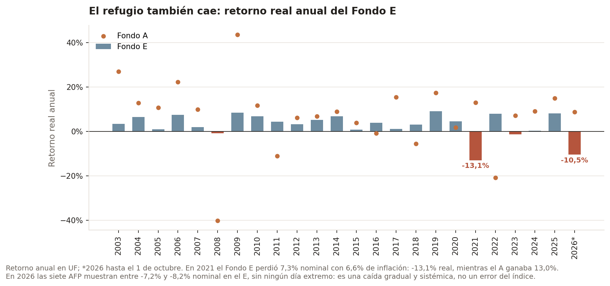
Contra las caídas de la bolsa, el E protege: lo hizo en 10 de las 12 tormentas en que cayó el A. Pero tiene su propio riesgo, el de tasas e inflación: perdió 13,1% real en 2021 y lleva −10,5% real en 2026. Cambiarse al E no es salir del riesgo; es cambiar un riesgo por otro.
Todo lo anterior responde cuánto costaría si alguien se cambiara: es un contrafactual de precios, no evidencia de que la gente lo haga. Así que fui a buscar el comportamiento real en los boletines mensuales de la Superintendencia.
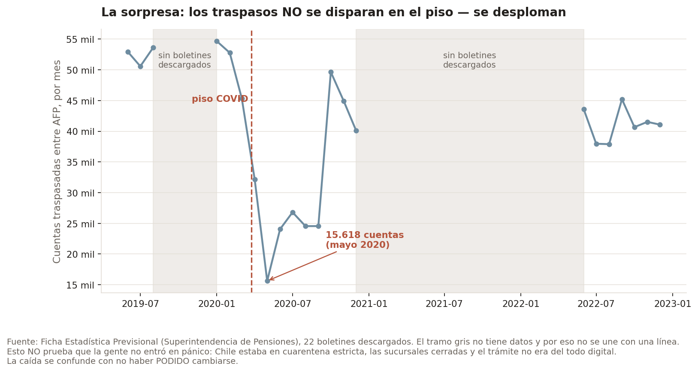
Esto no prueba que la gente no entró en pánico. Chile estaba en cuarentena estricta, las sucursales cerradas y el trámite no era del todo digital. La caída se confunde con no haber podido cambiarse. El dato no da para más, y así queda dicho.
pip install -r requirements.txt
python etl/fetch_valor_cuota.py # descarga los 5 archivos reales
python etl/fetch_uf.py && python etl/parse_uf.py
python etl/build_duckdb.py
python analysis/pension_loss.py # la pérdida en la pensión, por edad
python analysis/bootstrap_cost.py # 2.000 historias sintéticas
python analysis/time_series.py # GARCH, régimen y la señal fuera de muestra
python analysis/kpis.py # Sharpe, drawdown, CVaR, tasa de reemplazo
python scripts/calculator.py # calculadora interactiva
scripts/calculator.py deja elegir una caída real (o fechas propias), a qué fondo te
habrías cambiado y cuántos meses después habrías vuelto, y calcula el costo histórico real contra
los mismos datos de esta página. Son 69 tests, sin necesidad de red.